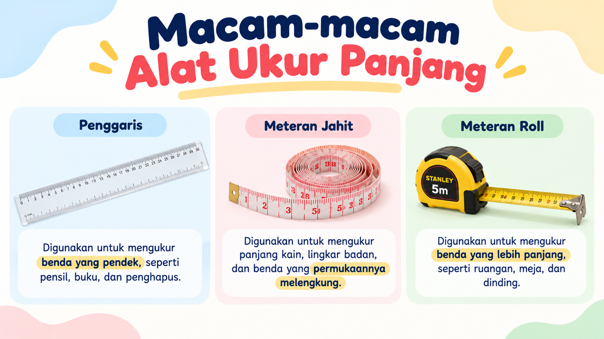
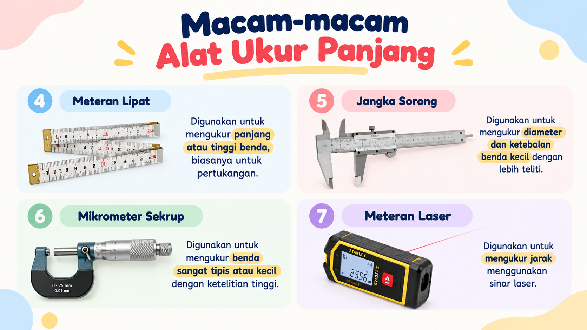

PengukuranPanjang
Kelas 4 SD Al Azhar Bintaro
Ms Syifa
Kelas 4 SD Al Azhar Bintaro
Ms Syifa
Pengukuran panjang adalah kegiatan untuk mengetahui
panjang, lebar, tinggi, atau jarak suatu benda
menggunakan alat ukur.
Satuan baku panjang adalah satuan yang memiliki ukuran tetap dan hasilnya sama jika digunakan oleh siapa pun dengan cara yang benar.


AYO BERLATIH!
Klik benda di kiri, lalu klik satuan yang cocok di kanan. Yuk, hubungkan dengan garis!
BELAJAR SAMBIL BERMAIN
Klik satuan awal, lalu satuan tujuan. Hitung langkahnya bersama!
Pilih satuan awal di tangga, atau gunakan contoh di kanan.
Coba 3 m → cm. Ada berapa tangga yang dilewati?
Tekan “Jalankan tangga” untuk mencari tahu.
WAKTUNYA BERMAIN & BELAJAR
Mulai petualanganmu menjadi ahli pengukuran!
Kenali satuannya, pilih alat ukurnya. Kamu pasti bisa!
0/ 100
Coba lagi dengan urutan soal dan pilihan yang berbeda.
Lihat tangganya, tentukan sendiri cara menghitungnya!
0/ 100
Coba lagi! Pilihan jawaban akan diacak.
Baca dengan teliti, lalu pilih jawaban terbaikmu!
0/ 100
Coba lagi! Pilihan jawaban akan diacak.